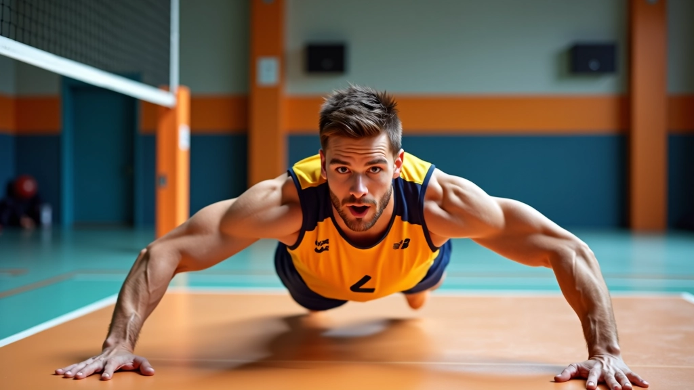
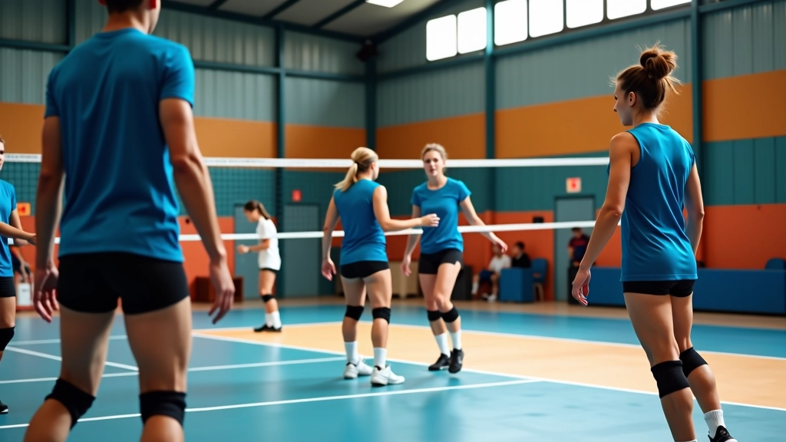

إتقان حركة الإنقاذ البنكيكي
التقنية الأكثر تحديًا والأكثر أهمية في الدفاع. نتعلم معاً كيفية تنفيذها بأمان وفعالية دون التعرض للإصابات


الكاتب
فريق الأهلي فولي التحريري
فريق تحريري متخصص
من إعداد فريق الأهلي فولي التحريري، المتخصص في شرح تقنيات الكرة الطائرة بطريقة واضحة وعملية
ما هي حركة الإنقاذ البنكيكي؟
الإنقاذ البنكيكي ليس مجرد تقنية عادية. إنها آخر محاولة للدفاع عندما تكون الكرة قريبة جداً من الأرض ولا يوجد وقت كافٍ للوقوف بشكل طبيعي. تقذفين نفسك على الأرض بسرعة، وتضعين ذراعيك أمام جسمك، وتتركين جسمك ينزلق على الأرض لمسافة قصيرة.
الاسم يأتي من شكل الحركة — تشبه كيفية رمي فطيرة رقيقة على سطح مستوٍ. اللاعبة تنزلق للأمام وتضع ذراعيها معاً بشكل مسطح تحت الكرة في اللحظة الأخيرة. هذه الحركة تتطلب شجاعة وتركيزاً وتدريباً جاداً.
المفتاح الأساسي: الإنقاذ البنكيكي ينقذ اللعبة في اللحظات الحرجة. لا تتركي الكرة تسقط عندما يمكنك محاولة إنقاذها، حتى لو كان ذلك يعني الانزلاق على الأرض.

التحضير والحماية
قبل أن تبدئي بممارسة الإنقاذ البنكيكي، يجب أن تتأكدي من أنك محمية بشكل صحيح. ارتدي واقيات الركبة ذات جودة عالية — هذه ليست خيارية. اختاري واقيات سميكة توفر دعماً حقيقياً وليست مجرد قطعة نسيج رقيقة.
واقيات الكوع أيضاً ضرورية. عندما تنزلقين على الأرض، ستلمسين الأرض بأجزاء من جسمك لم تتعودي على ذلك. الحماية الجيدة تعني الثقة. وعندما تشعرين بالثقة، تؤدين الحركة بشكل أفضل.
نصيحة عملية: تحققي من واقياتك قبل كل جلسة تدريب. إذا بدأت تشعرين بألم في الركبة أو الكوع أثناء الممارسة، توقفي فوراً وأخبري المدرب.
خطوات تنفيذ الحركة
الإنقاذ البنكيكي ليست حركة معقدة من حيث المبدأ، لكنها تحتاج إلى ممارسة متكررة حتى تصبح حدسية. إليك الخطوات:
اقرئي الموقف
الكرة قريبة من الأرض والوقت قصير. لا يمكنك الوقوف والانحناء بشكل طبيعي. تحتاجين إلى حركة سريعة. لا تترددي — التردد يعني الفشل.
ادفعي نفسك للأمام
ادفعي بقدميك بقوة للأمام باتجاه الكرة. يجب أن تكون الحركة سريعة وحاسمة. أنت تهدفين إلى الوصول إلى الكرة قبل أن تلمس الأرض بـ 30 سنتيمتر على الأقل.
ضعي ذراعيك بشكل مسطح
عندما تنزلقين للأمام، ضعي ذراعيك معاً بشكل مسطح تماماً أمام جسمك. يجب أن تشكل ذراعاك منصة مسطحة لإيقاف الكرة. اليدان معاً، الذراعان مستقيمتان.
استقبلي الكرة وتابعي
عندما تلمس الكرة ذراعيك، ارفعيهما قليلاً لإعطاء الكرة اتجاهاً صحيحاً. يجب أن تصل الكرة إلى زملائك لمتابعة اللعب. ثم انزلقي بحذر وتوقفي بأمان.
مقالات ذات صلة
توسيع مهاراتك الدفاعية من خلال فهم تقنيات الاستقبال الأخرى والتدريبات المتقدمة

أساسيات الاستقبال السفلي الصحيح
تعلم المواضع الأساسية والحركات التي تشكل أساس كل استقبال فعال. نغطي وضع القدمين والذراعين والتركيز البصري

تمارين متقدمة لتحسين الاستقبال
سلسلة من التمارين التي تحاكي ظروف المباراة الحقيقية. تركز على السرعة والدقة والثقة تحت الضغط

قراءة اللعبة والاستجابة السريعة
الدفاع الجيد يبدأ قبل أن تُرمى الكرة. تعلم كيفية قراءة الهجوم والتنبؤ بحركات الخصم
التدريب والممارسة المنتظمة
الإنقاذ البنكيكي لن يصبح جزءاً طبيعياً من ردود أفعالك إلا من خلال الممارسة المتكررة. ابدئي بحركات بطيئة ومنخفضة الكثافة. تعودي على الشعور بالانزلاق على الأرض. اشعري بكيف تتحرك عضلاتك وكيف يستجيب جسمك.
بعد بضع جلسات، زيدي السرعة تدريجياً. أضيفي حركة الكرة الفعلية. ثم جربيها في ظروف تدريبية تشبه المباراة. لا تتوقعي أن تصبحي ماهرة فوراً — تحتاج معظم اللاعبات إلى ثلاثة أسابيع من التدريب المكثف حتى تشعرن بالثقة.
برنامج تدريب بسيط: الأسبوع الأول: حركات ببطء على الرمل أو الحصيرة. الأسبوع الثاني: سرعة متوسطة مع كرات خفيفة. الأسبوع الثالث: ظروف واقعية مع ضغط وسرعة عالية.

السلامة أولاً دائماً
تجنب الإصابات الشائعة
الإصابات في الإنقاذ البنكيكي تحدث عادة عندما لا تكون محمية بشكل صحيح أو عندما تحاولين الحركة بسرعة كبيرة قبل أن تكوني مستعدة. إليك أكثر الإصابات الشائعة وكيفية تجنبها:
آلام الركبة
ارتدي واقيات جيدة وتأكدي من أنك تنزلقين على سطح سليم. تجنبي الحركات المفاجئة على أرض صعبة جداً.
إجهاد الرسغ
حافظي على رسغيك مستقيمين. لا تثني معصميك للخلف عند استقبال الكرة. قوة الذراعين والكتفين يجب أن تمتص التأثير، وليس الرسغين.
إصابات الكتف
لا تحاولي توقيف الكرة برفع كتفيك للأعلى. ابقي مسترخية. اجعلي جسمك يمتص الصدمة بشكل طبيعي.
إصابات الأضلاع
لا تنزلقي بسرعة كبيرة جداً على جانبك. حاولي توزيع وزنك بالتساوي. ابدئي ببطء حتى يعتاد جسمك على الحركة.
الخلاصة والتطبيق
الإنقاذ البنكيكي ليست مهارة سهلة، لكنها واحدة من أهم المهارات الدفاعية في الكرة الطائرة. عندما تتقنينها، ستنقذين لعبات لا يمكن إنقاذها بطرق أخرى. ستصبحين لاعبة دفاع حقيقية.
ابدئي بالحماية والتحضير. تدربي ببطء وحذر. زيدي السرعة والشدة تدريجياً. استمعي إلى جسمك وتوقفي إذا شعرت بألم غير طبيعي. مع الممارسة المنتظمة لمدة ثلاثة أسابيع إلى شهر واحد، ستصبح هذه الحركة جزءاً طبيعياً من لعبتك.
هل أنتِ مستعدة لتحسين دفاعك؟
اكتشفي المزيد من التقنياتتنويه مهم
المعلومات الواردة في هذا المقال هي لأغراض تعليمية وإعلامية فقط. الإنقاذ البنكيكي حركة قد تحمل مخاطر إذا لم تُنفذ بشكل صحيح. يُنصح دائماً بالتدريب تحت إشراف مدرب مؤهل متخصص في الكرة الطائرة. توقفي فوراً عن أي حركة إذا شعرتِ بألم غير طبيعي واستشيري الطبيب أو أخصائي العلاج الطبيعي. كل فرد مختلف، والمهارات تتطور بمعدلات مختلفة. لا تحاولي تجاوز حدود جسمك.